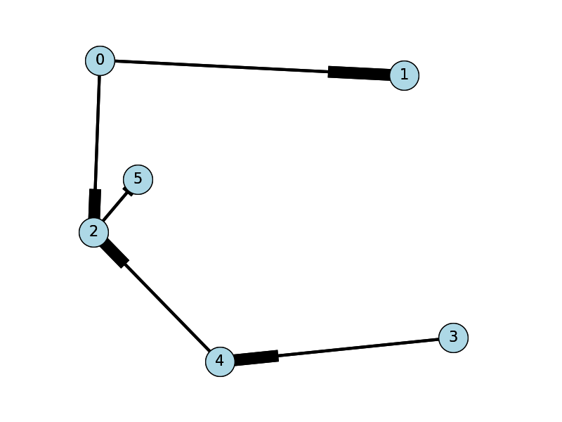

Graph as adjacency list
The adjacency list is an alternative way to represent adjacency matrices. This is a list consisting only of those vertex pairs that are "adjacent." Because the adjacency list excludes the data of non-adjacent vertices, it requires fewer system resources, such as memory and disk space, than the adjacency matrix.
An adjacency list is recommended for representing large sparse graphs.
The implementation of an adjacency list can be via list, trees, or hash table.
An adjacency list can be represented as follows:
G = [v5:v1, v3; v6:v1, v3, v5; … vN{}]
showing each vertex followed by a lists of its neighbors.
Alternatively:
G = [v5:1, 3; v6:1, 3, 5; … vN{}]
… where each vertex is followed by the index of its neighbors in the adjacency table, or G[i:i,j]
As a hash table the adjacency list can have a key associated with a list of neighbors:
G[v5] = {v1,v3,...
In Python such an adjacency list can look as follows:
If the graph is weighted, perhaps with percentiles, the adjacency list can be denoted as:
G = { (5, 1):0.5, (5, 3):0.8, (6, 1):0.2, (6, 3):0.4, (6, 5): 0.9 }
Or, in Python as:
For example, reading an adjacency list from file graphdata.txt,
graphdata.txt:
0,1,3
0,2,4
2,5,7
3,4,6
4,2,5
Now draw the graph (in Python with Networkx library):
import sys
import matplotlib.pyplot as plt
import networkx as nx
options = {
'node_color': 'lightblue',
'node_size': 900,
'width': 3,
'arrowstyle': '-|>',
'arrowsize': 12,
'font_size': 15
}
the_file = "graphdata.txt"
G = nx.DiGraph()
with open(the_file) as f:
for line in f:
a, b, w = map(int, line.strip().split(','))
G.add_edge(a, b, weight = w)
pos = nx.spring_layout(G,scale=1)
nx.draw(G,pos,font_size=8)
nx.draw_networkx(G, pos, arrows=True, **options)
plt.show()
Exercise
Write a function graph_density that determines if a graph is dense or sparse according to a file containing an adjacency list. If the graph is sparse, the function calls another function, adjacency_matrix, to generate an adjacency matrix.
Your graph_density function should additionally read a file containing an adjacency matrix. If the adjacency matrix is dense, your function calls another function, adjacency_list, to generate an adjacency list.
Provide your functions and your test results.